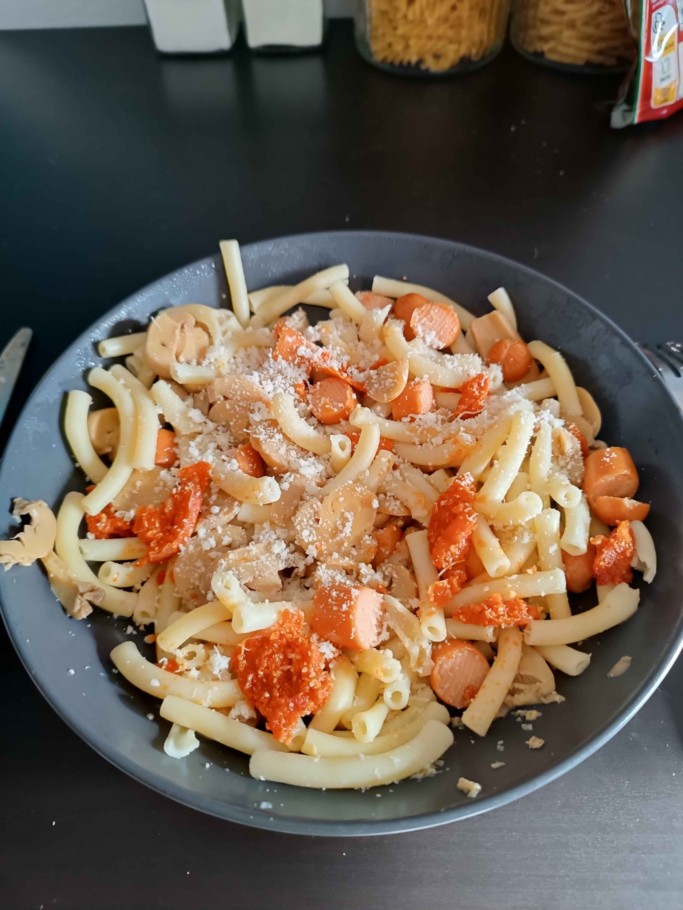

Ingrédients
- 200 g de pâtes (Sedani rigati)
- Du chorizo
- Du coca suicide
Étapes de Préparation
- Mettez les pâtes dans l'eau froide non salé puis allumez le feu. (un peu comme les pâtes blanches
- Coupez le chorizo que vous avez acheté au boucher (le inter quoi).
- Puis allumez votre micronde et faites tout réchauffer. (Pourquoi ce casser le cul pour faire cette recette de merde franchement ?)
Conseils
Rajoutez un peu de gruyère pour accompagner votre plat y amènera une touche d'originalité et vous fera oublier tout va tracas du quotidien :)